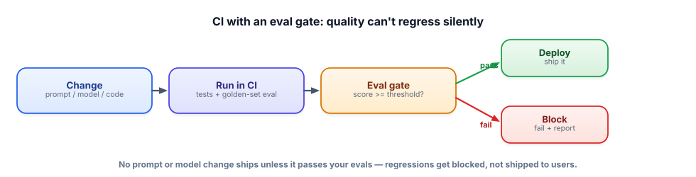

CI for prompts & evals
In normal software, tests in CI stop you shipping bugs. In LLM software, a one-word prompt tweak can quietly wreck quality with no error anywhere. The fix is the same idea, upgraded: make every change pass your evals before it can ship.
Why LLM apps need an eval gate
CI (continuous integration) is the automation that runs your tests every time you change code, blocking the change if they fail. It works because bugs in normal code usually announce themselves — a test goes red. But LLM behavior is different: you “fix” one prompt to improve one answer and silently break five others, and nothing errors. The output is still fluent, still plausible — just worse. Traditional tests can’t catch that, because there’s no exception to catch. So you add an eval gate: CI runs your golden-set evaluation (Track 6) on every change and blocks the deploy if the quality score drops below a threshold. Now a regression is caught by a red build, exactly like a bug — instead of by an angry user a week later.

What runs in CI
Two kinds of checks. Deterministic tests — fast, exact assertions run at temperature 0: does the endpoint return valid JSON with the required fields? does a known question retrieve the known-correct chunk? does the SQL agent produce a runnable query for a fixed question? These behave like normal unit tests. The eval — your golden set of question→expected pairs scored for quality (exact match, or LLM-as-judge for open-ended answers), producing a single number you can gate on. You wire both into a CI workflow that fails if either the tests fail or the eval score falls below your bar.
name: ci
on: [push, pull_request]
jobs:
test:
runs-on: ubuntu-latest
steps:
- uses: actions/checkout@v4
- run: pip install -r requirements.txt
- run: pytest # deterministic tests
- run: python eval.py --min-score 0.85 # the eval gateeval.py runs your golden set and exits with a failure code if the score is below --min-score. That non-zero exit is what turns a quality drop into a failed build — the whole trick in one line.
score = run_golden_set() # fraction correct on your held-out set
print(f"eval score: {score:.2f}")
if score < args.min_score:
print("BELOW THRESHOLD — blocking deploy")
sys.exit(1) # fails the CI jobKeep prompts in version control, not pasted into a dashboard. Then a prompt change is a diff that goes through the same review + eval gate as any code change — reviewable, revertible, and testable. Treating prompts as code is what makes “we changed the prompt and quality dropped” a caught regression instead of a mystery.
- LLM regressions are silent — no error, just worse output — so ordinary tests miss them.
- Add an eval gate: CI runs your golden set and blocks the change if the score drops below a threshold.
- Run deterministic tests (temp 0: valid JSON, right retrieval) and the quality eval.
- The mechanism is a non-zero exit code on a failing eval — that’s what fails the build.
- Prompts live in version control, so every prompt change is reviewed and eval-gated like code.
Your teammate wants to change the system prompt to fix one customer complaint, and deploy it straight to production. As the person who set up CI, what do you insist happens first — and what specifically stops a hidden regression?
▸ Show solution & reasoning
What I insist on: the prompt change goes in as a commit/PR, which triggers CI. CI runs the deterministic tests and the golden-set eval; the change only merges/deploys if the eval score stays at or above the threshold. I’d also add the specific complaint as a new case in the golden set, so we can prove the fix works and never regress on it again.
What stops the hidden regression: the golden set contains many cases, not just the one being fixed. If “fixing” the complaint quietly degrades ten other answers, their scores drop, the aggregate falls below the threshold, and the build fails — blocking the deploy. Without the gate, the change would ship looking fine (no errors) and the ten regressions would surface later as user complaints. The gate converts “we’ll find out in production” into “we find out in the pull request,” which is the entire value of CI applied to LLM quality.
Why can’t ordinary unit tests alone protect an LLM app from quality regressions the way they protect normal code?
The most valuable thing that comes out of running an eval gate over time isn’t any single score — it’s the golden set itself, which should grow with every incident. When something goes wrong in production (a class of question the system botches, a prompt injection that slips through, a hallucination a user reports), the fix isn’t just to patch it; it’s to add that exact case to the golden set. Now the eval gate guarantees you can never regress on it again — the system literally cannot ship a change that reintroduces that failure. Over months, this turns your evaluation suite into an encoded memory of every mistake you’ve made and fixed, which is a genuine competitive moat (Track 12): a competitor can copy your prompts, but not your hard-won library of failure cases.
This also changes how you adopt new models. When a better model launches, teams without an eval gate upgrade nervously and hope; teams with one just run the new model against the golden set and see whether it’s actually better on their real cases — often within an hour, safely. The eval gate is what lets you move fast without breaking things: it’s simultaneously your regression shield, your model-selection tool, and your institutional memory. When an interviewer asks how you’d keep an LLM product reliable as it evolves, “evals in CI, and every production failure becomes a permanent test case” is the answer that signals real operational maturity.
Even with a great eval gate, production will surprise you — real users do things your golden set didn’t imagine. So you watch. Next: monitoring in production.